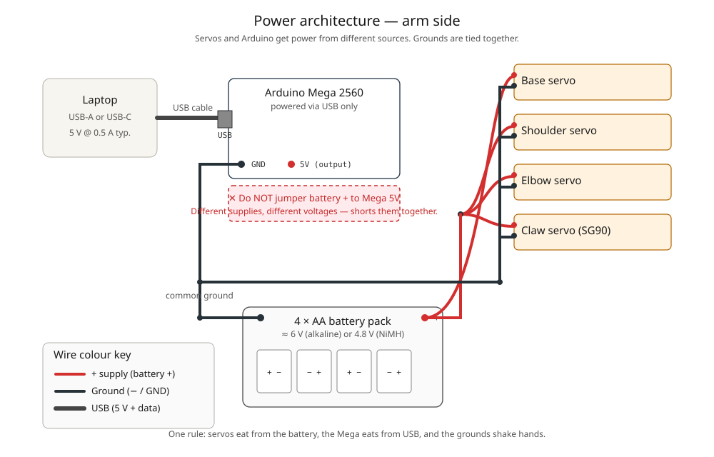
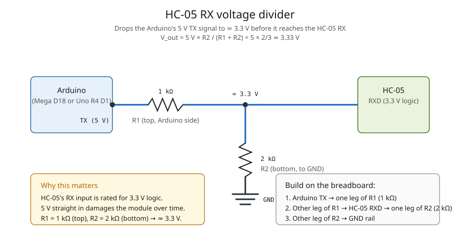
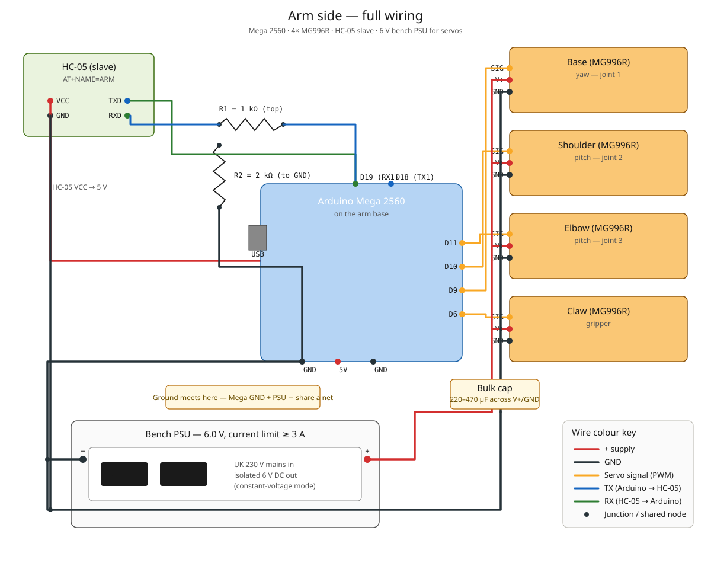
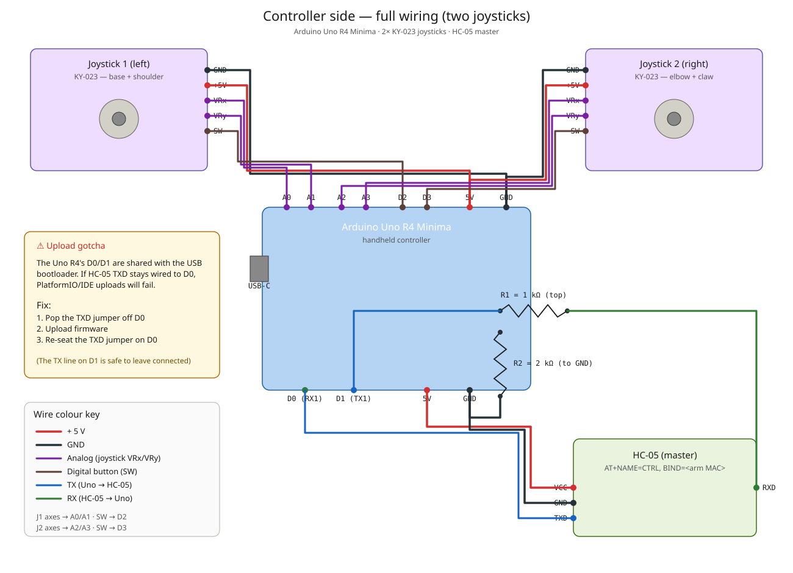

Visual companion to WIRING.md. Open each diagram in a new tab to zoom.

This is the single most important diagram. Two separate power sources feed the arm:
The two supplies share one node: ground. Without that common return path, the servo signal from the Mega and the servo's own reference voltage disagree, and the servos twitch or refuse to respond.
+ must not touch the Mega's 5V pin, VIN, or any red rail that carries USB 5 V. You'd be shorting two supplies with different voltages — best case, the USB host cuts power; worst case, something smokes.

Both Arduinos in this project output 5 V logic. The HC-05's RX input is rated for 3.3 V. Feeding 5 V straight in works for a while, then kills the module.
The fix is a resistive divider between the Arduino TX pin and the HC-05 RX pin:
The voltage at the junction is V_out = V_in × R2 / (R1 + R2) = 5 V × 2 / (1 + 2) ≈ 3.33 V — exactly what the HC-05 wants. If you want belt-and-braces, a proper 3.3 V level shifter IC (TXS0108E, BSS138) is bulletproof and no arithmetic to get wrong.

Everything that lives on the arm base. Follow the coloured wires:

The handheld controller has three things attached to the Uno R4 Minima: the joystick, the HC-05 master, and a USB cable (to your laptop during development; later, a power bank or 9 V battery in the Vin jack).
Joystick mapping in firmware: VRx → A0, VRy → A1, SW → D2 (with internal pull-up). If an axis feels backwards once you're moving the arm, flip the sign of jx or jy in controller_uno_r4/main.cpp.